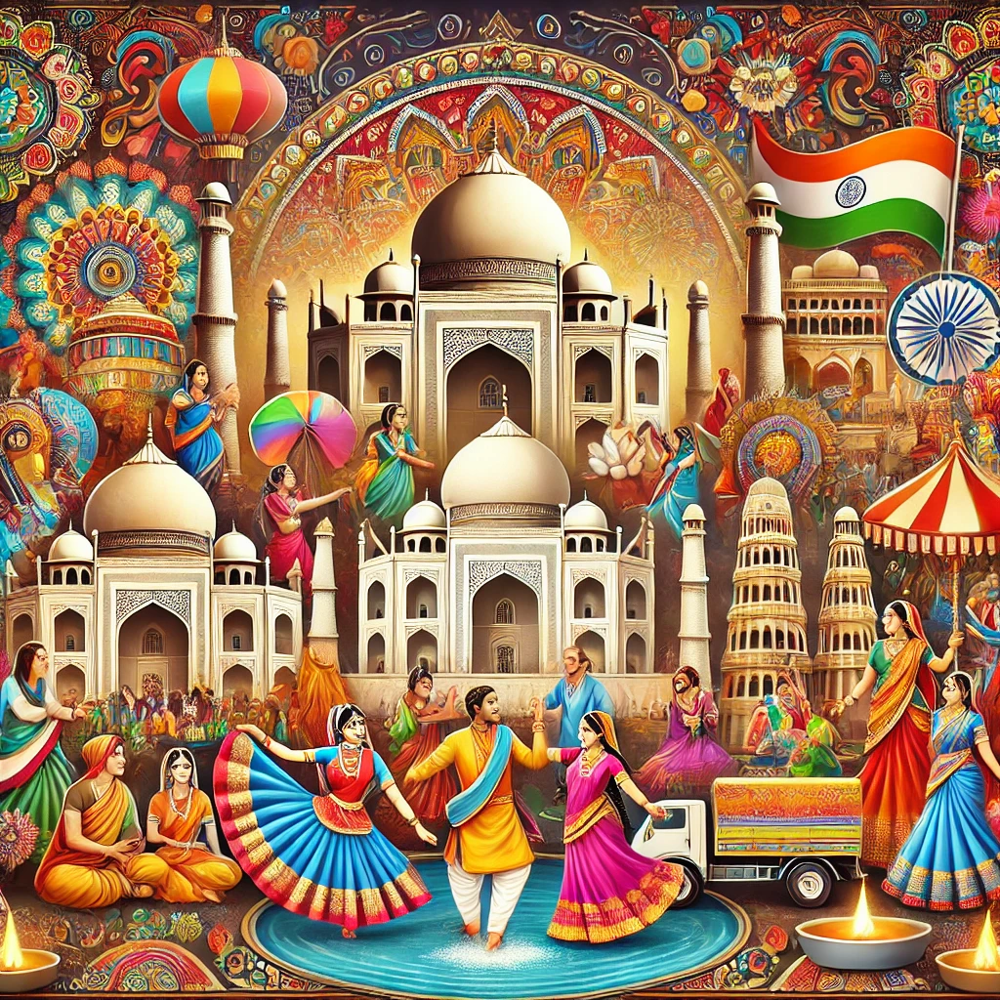

India is a land of diverse cultures, languages, and traditions that have been passed down for centuries. From the colorful festivals like Diwali and Holi to the intricate classical dance forms like Bharatanatyam and Kathak, the richness of Indian heritage is unmatched. Traditional attire such as sarees and turbans reflect the artistic craftsmanship of each region. The country's architectural marvels, including temples, palaces, and forts, stand as testaments to its glorious past. Indian culture is a blend of ancient wisdom and modern vibrancy, making it one of the most fascinating cultures in the world.
